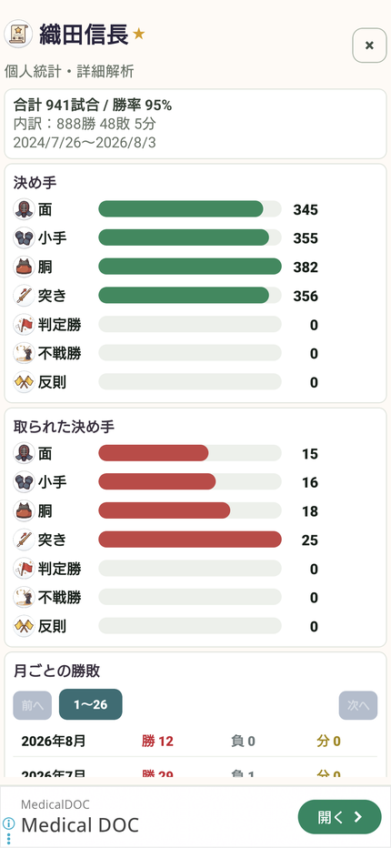

21 / 振り返る
得意技と取られやすい技を知る
結果だけでなく、どの技で取れたか、取られたかを見ます。
操作の入口統計 → 選手 → 個人統計・詳細解析
決め手を見る
面・小手・胴・突きなど、記録した決め手の内訳を確認します。よく取れている技が、得意技を考える手掛かりになります。
取られた決め手も見る
相手に取られた技を確認します。勝率だけでは分からない課題を見つけます。
動画と合わせて振り返る
同じ技でも状況はさまざまです。該当する対戦の動画を見て、間合いや動きと合わせて考えます。
期間をそろえて比較する
直近の試合と以前の試合など、条件をそろえて変化を確認します。入力漏れや誤りに気付いたら履歴を修正します。

